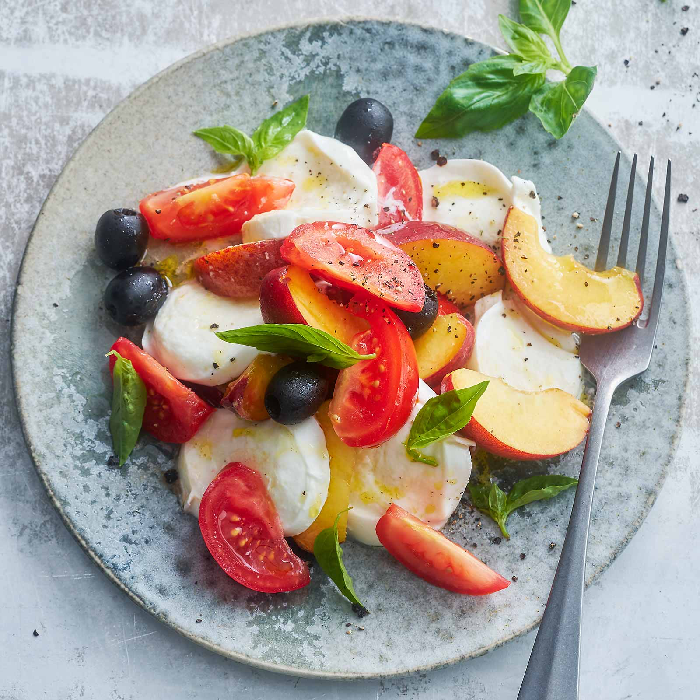
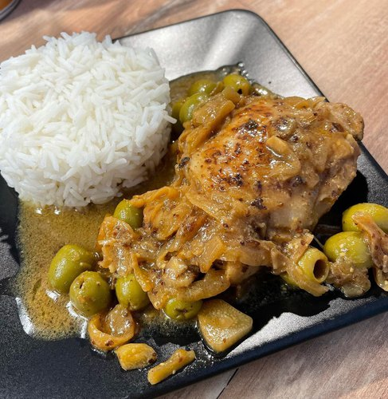
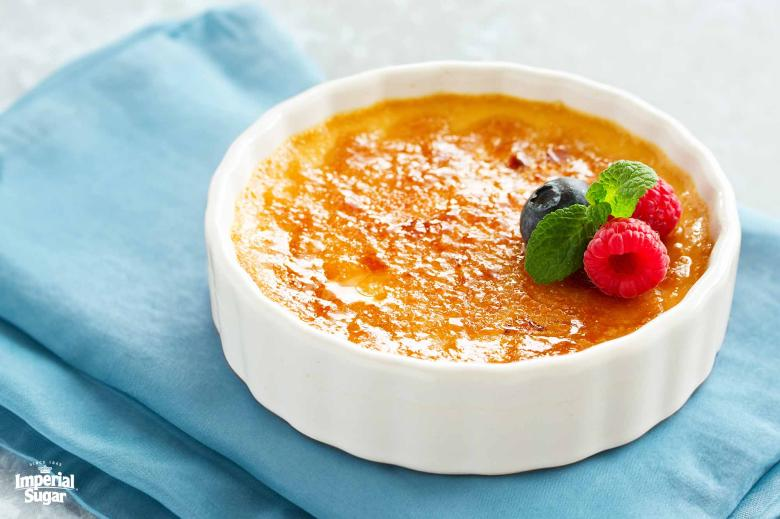

MENU
Entrees
-
Salade Caprese: Tomates fraîches, mozzarella et
basilic arrosés d'un glaçage balsamique.
-
Bruschetta: Pain grillé garni de tomates hachées,
ail et basilic frais.
-
Gougères: Petits choux au fromage servis chauds.
-
Soupe a l'oignon gratinée: Une délicieuse soupe à
base d'oignons caramélisés, servie avec des croûtons dorés et du
fromage fondant sur le dessus.
-
Bruschetta aux tomates: Pain grillé garni d'un
mélange frais de tomates hachées


Plats Principaux
-
Saumon grillé: Filet de saumon assaisonné et
grillé à la perfection, servi avec une sauce au beurre citronné.
-
Poulet au citron: Blanc de poulet mariné, rôti et
servi avec des légumes de saison.
-
Pâtes Primavera: Pâtes fraîches avec des légumes
de saison et une sauce légère à l'ail.
-
Poulet Yassa: Un plat traditionnel sénégalais de
poulet mariné dans du citron
-
Tacos au poissons: Tacos garnis de filets de
poisson grillés, accompagnés de chou croquant
Desserts
-
Fondue au chocolat: Assortiment de fruits et de
guimauves servis avec une riche fondue au chocolat.
-
Tarte Tatin: Tarte aux pommes caramélisées servie
tiède avec de la crème fraîche.
-
Mousse au chocolat: Mousse légère et aérienne au
chocolat noir, garnie de crème fouettée.
-
Salade de fruits: Un mélange de différents fruits
frais coupés en morceaux
-
Creme brulee: Un dessert classique à base de
crème vanillée, recouvert d'une fine couche de caramel croquant,
qui se casse sous la cuillère.

Contactez-nous pour les réservations